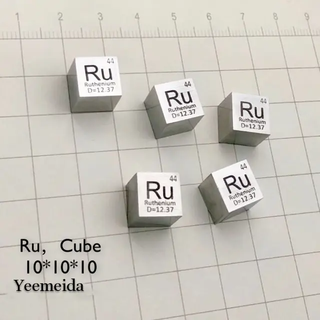

Рутений
Руте́ний (лат. Ruthenium), Ru, химический элемент VIII группы короткой формы (8-й группы длинной формы) периодической системы; атомный номер 44, атомная масса 101,07; относится к платиновым металлам. В природе семь стабильных изотопов: 96Ru (5,52 %), 98Ru (1,88 %), 99Ru (12,7 %), 100Ru (12,6 %), 101Ru (17,0 %), 102Ru (31,6 %), 104Ru (18,7 %); искусственно получены радиоактивные изотопы с массовыми числами 87–120. Открыт К. К. Клаусом в 1844 г. при исследовании остатков от аффинажа самородной платины; название «рутений» от лат. Ruthenia – Россия.
Открыт профессором Казанского университета Карлом Клаусом в 1844 году, который в том же году опубликовал о новом элементе большую статью «Химические исследования остатков Уральской платиновой руды и металла рутения» в «Учёных записках Казанского университета». Об открытии, методе получения и свойствах нового элемента Клаус сообщил в письме Г. И. Гессу на немецком языке. Гесс зачитал письмо на заседании Петербургской Академии наук 13 сентября 1844 года, текст был опубликован в бюллетене Академии и в переводе на русский язык — в «Горном журнале». Клаус выделил рутений из уральской платиновой руды в чистом виде и указал на сходство между триадами рутений — родий — палладий и осмий — иридий — платина.

Рутений получают сплавлением остатков, получаемых при переработке шлиховой Pt и шламов рафинирования Cu и Ni, с пероксидами Ba или Na, растворением их в воде, отгонкой RuO4 действием Cl2, поглощением возгона соляной кислотой, осаждением и прокаливанием (NH4)2RuCl6, восстановлением полученного RuO2. Объём мирового производства рутения около 10 т/год (2015).Рутений применяют в виде прочных коррозионностойких и износостойких сплавов с другими металлами, как катализатор органических реакций и др. Некоторые соединения рутения проявляют противоопухолевую активность.